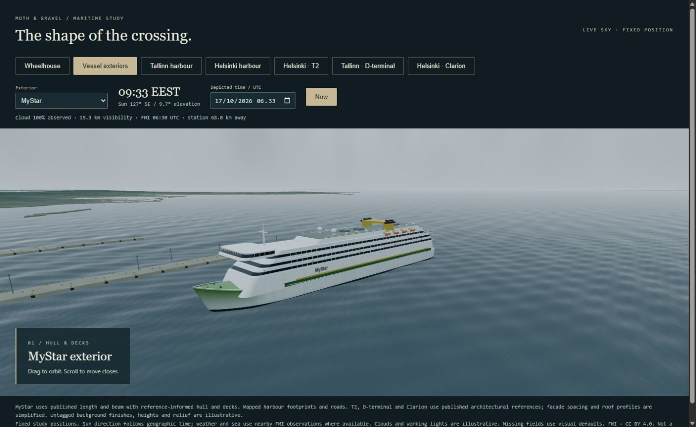
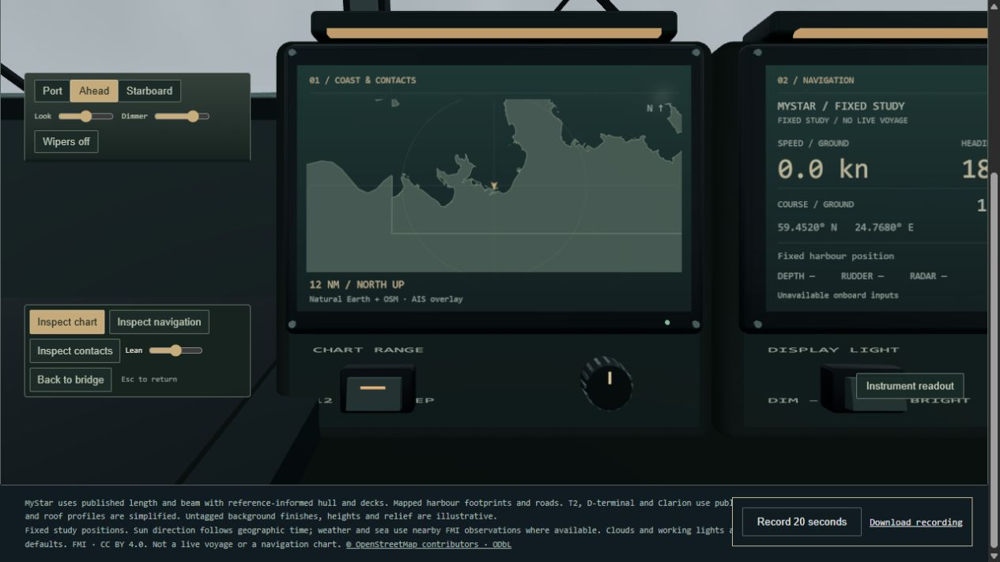
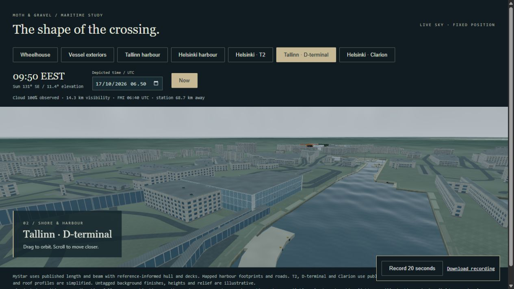
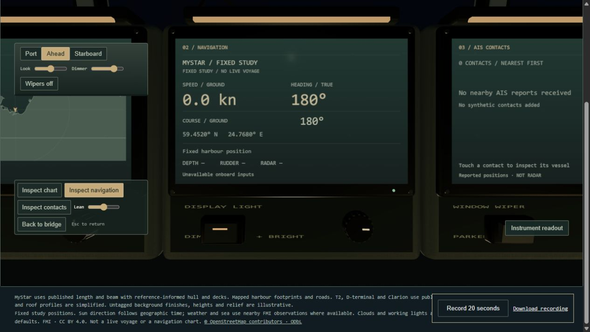
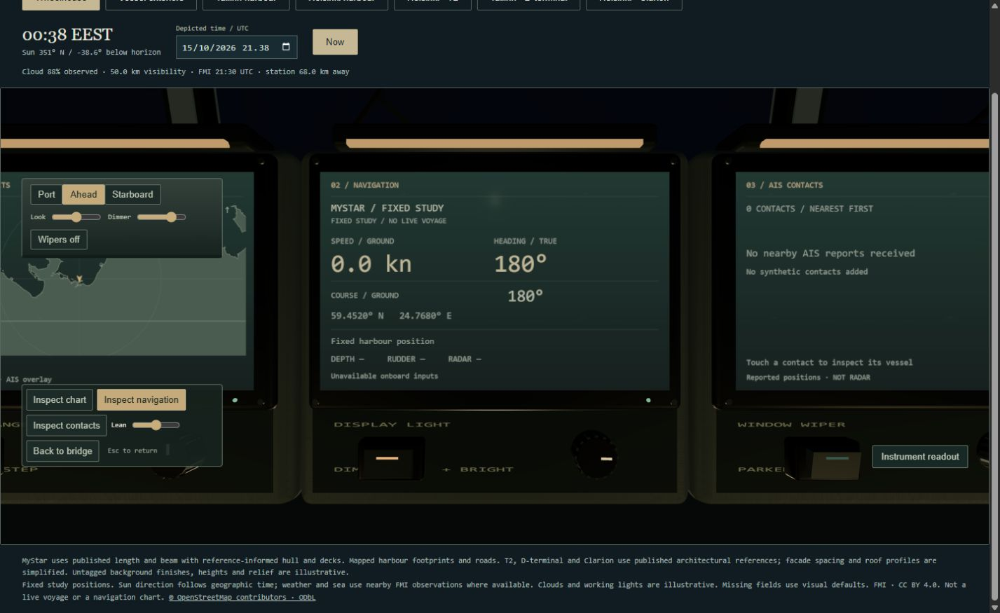
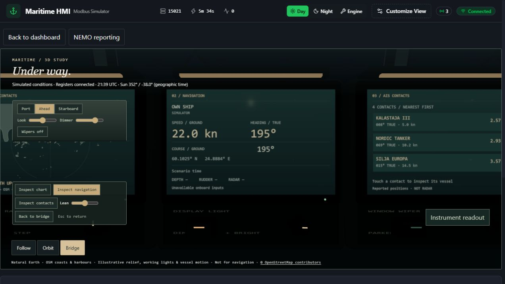
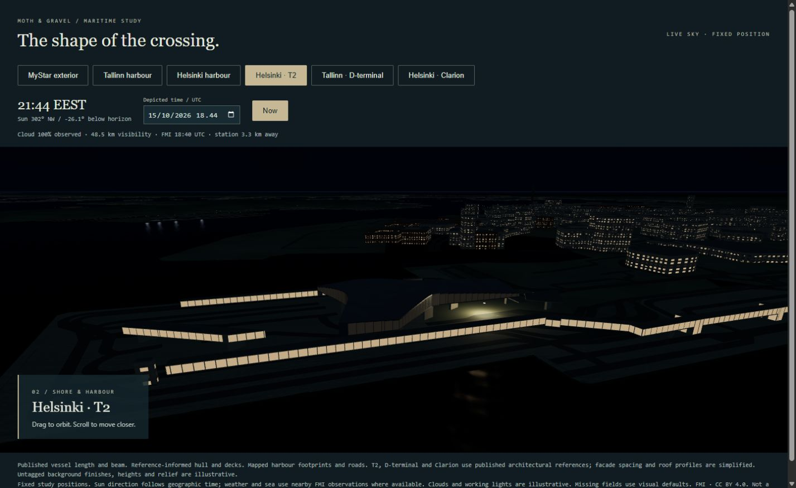
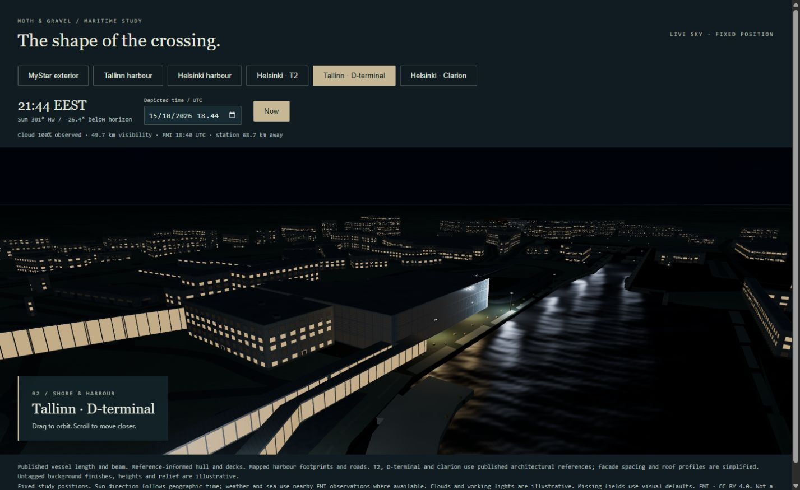
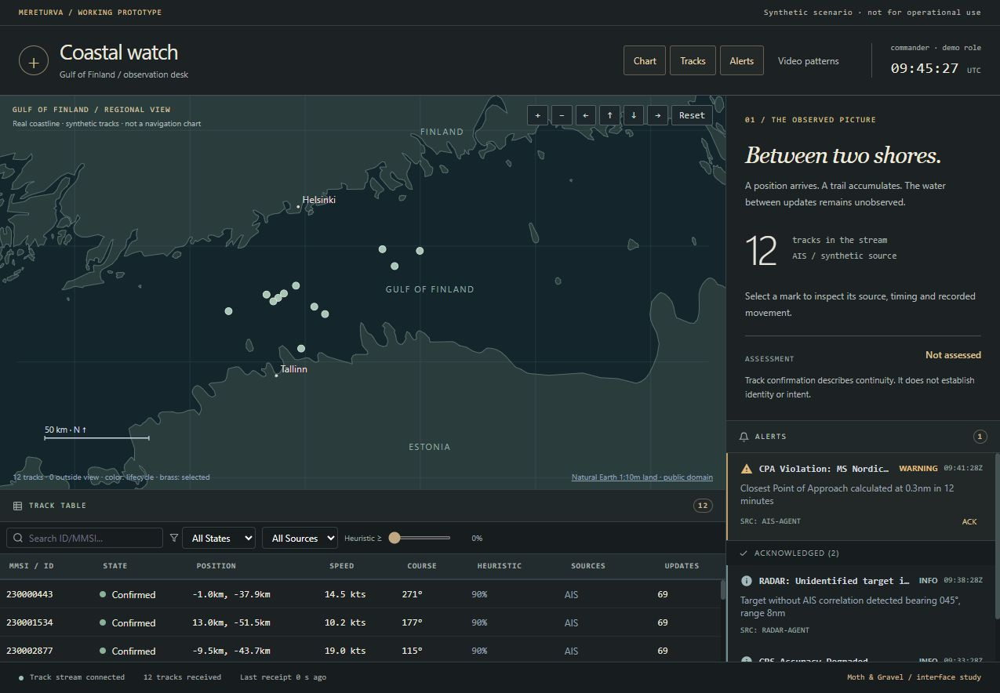

01 / MOTION
The water keeps moving.
MyStar exterior, sea motion and a short orbit. Fixed Tallinn study position; nearby FMI weather observed at 06:40 UTC. Captured 17 October 2026.
Download MP4 · 18.7 sMoth & Gravel / capture library / 17 October 2026
A small record of two working concepts. MyStar on the water, a bridge close enough to read, and a coastal picture that keeps its age in view.
Four silent clips and twelve screenshots. New maritime recordings sit beside dated captures from the earlier sessions.
01 / MOTION
MyStar exterior, sea motion and a short orbit. Fixed Tallinn study position; nearby FMI weather observed at 06:40 UTC. Captured 17 October 2026.
Download MP4 · 18.7 s02 / MOTION
The camera moves into the physical console. Instruments show a fixed study position, not a live voyage. Captured 17 October 2026.
Download MP4 · 16.0 s03 / MOTION
Navigation instrument and console lights. Depicted time: 17 October, 19:00 UTC / 22:00 EEST. Morning weather observations are retained for this light study.
Download MP4 · 18.2 s04 / MOTION
Coastal watch: real coastline, synthetic tracks. Selection, a closer coastline view, then an interrupted stream. Recorded 15 October 2026.
Download MP4 · 27.4 s
Fresh capture, 17 October. Morning sky with observed overcast conditions.
Download JPG
Fresh capture, 17 October. Physical instrument, surrounding controls and the inspection UI.
Download JPG
Fresh capture, 17 October. Reference-informed terminal, mapped footprints and illustrative background buildings.
Download JPG
Fresh capture, 17 October. Reference-informed terminal and harbour geometry, with nearby observed weather.
Download JPG
Fresh capture, 17 October. Depicted night lighting; current morning weather retained.
Download JPG
Earlier screenshot, 16 October. Retained as visual development evidence.
Download JPG
Earlier screenshot, 16 October. Simulator UI with instrument inspection; freshness and input availability remain visible.
Download JPG
Earlier screenshot, 15 October. Exterior lighting study.
Download JPG
Earlier screenshot, 15 October. Harbour lighting study.
Download JPG
Earlier screenshot, 15 October. Harbour lighting study.
Download JPG
Recorded 15 October. Gulf of Finland basemap and synthetic vessel observations.
Download JPG
Recorded 15 October. Source, age, position and bounded observation history.
Download JPGWhat these pictures can tell us
The maritime recordings come from fixed study positions. Nearby FMI observations shape the weather and sea where fields are available. The night clip changes the depicted sun position while retaining the morning weather. It is a light study, not a forecast or a live crossing.
Harbour footprints come from mapped data. Named terminals use architectural references; background buildings and materials remain illustrative. Coastal watch uses a real coastline and synthetic tracks.
The three new maritime videos record the rendered canvas directly. They preserve the browser’s uneven frame cadence; no motion was interpolated. The earlier Coastal watch video uses timed screenshots and direct cuts across uncaptured gaps. All clips are silent.
The manifest records capture dates, source commits where known, durations and checksums. Earlier screenshots are labelled with their original dates. This library is working material for specimen editing.
Sources: FMI · CC BY 4.0, OpenStreetMap contributors · ODbL, Natural Earth · public domain.
Start the maritime geometry study on port 3015. Run node capture-preview.mjs in this directory, open http://127.0.0.1:3016/, select a view, then use “Record 20 seconds” and “Download recording”. The recorder captures the 3D canvas without the surrounding interface. Keep source and depicted-time details with the exported clip.